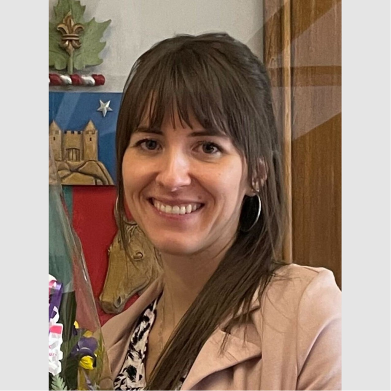
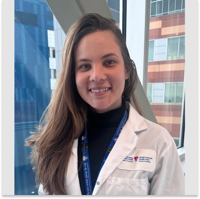
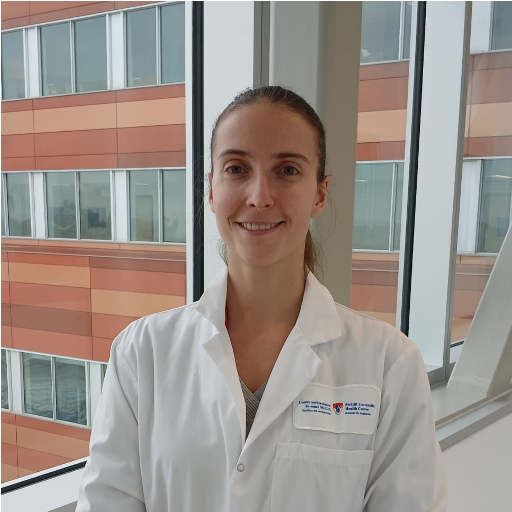
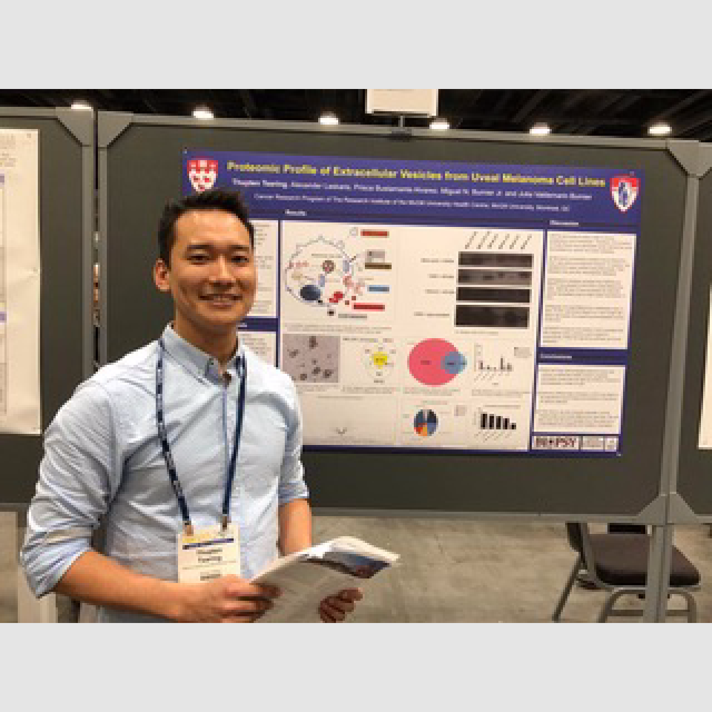
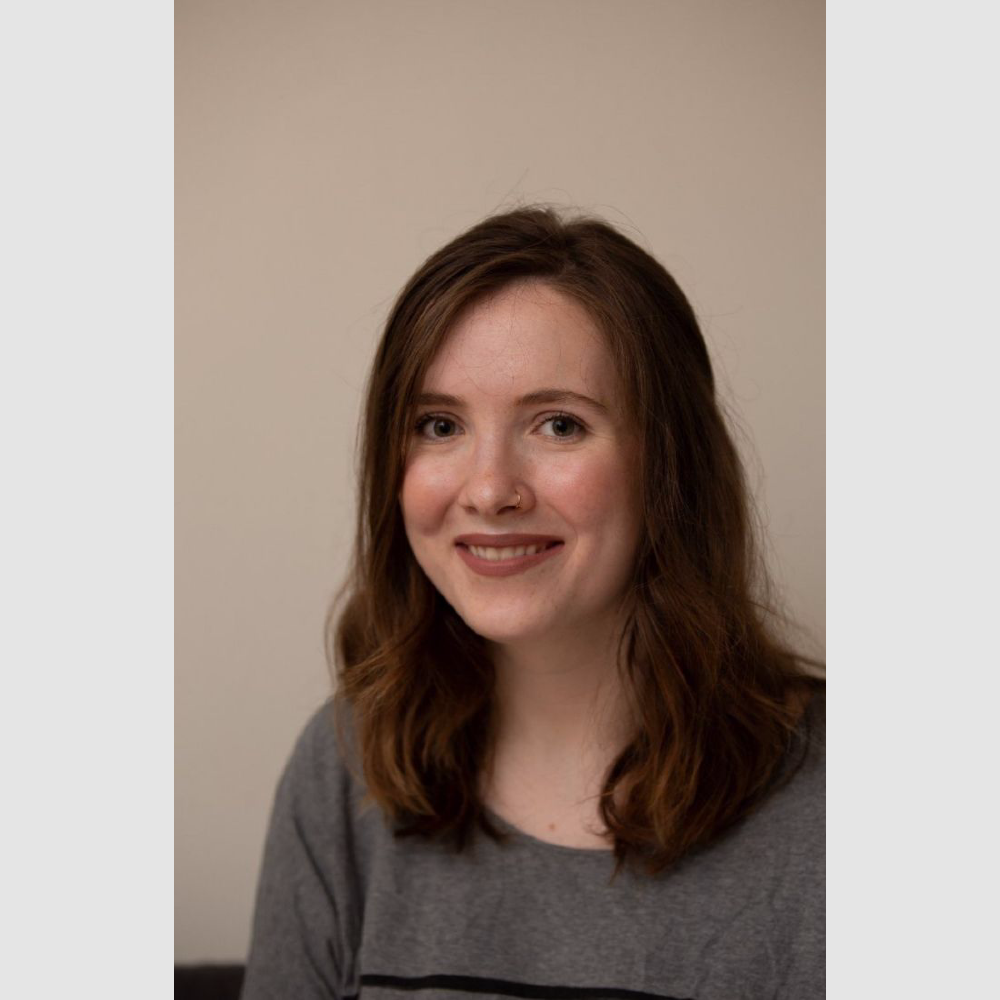
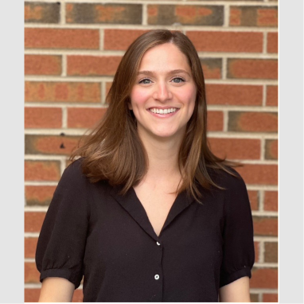
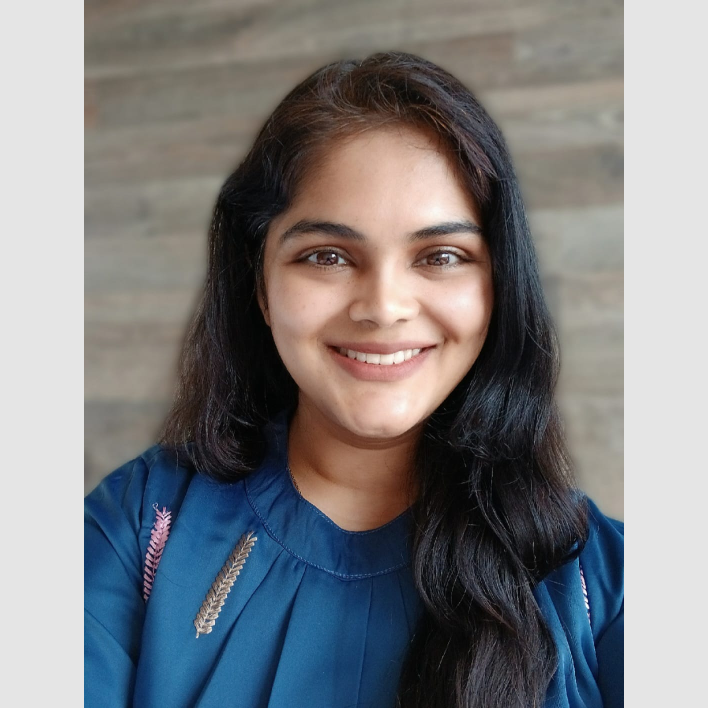
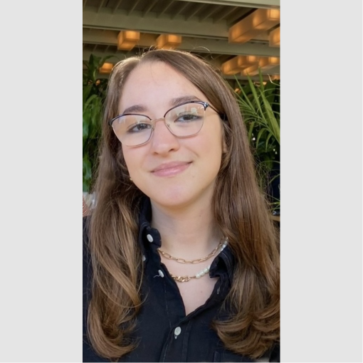

OUR TEAM
Principle Investigator
Dr. Burnier pursued a PhD in molecular and cell biology at McGill University (Experimental Medicine). The focus of her PhD was the molecular mechanisms underlying invasion and metastasis. Dr. Burnier went on to pursue related post-doctoral training at McGill and at the Centre for Genomic Regulation (Barcelona, Spain). Most recently, she focused on cancer genomics in clinical trials at the Princess Margaret Hospital (Toronto).
In 2018, Dr. Burnier began an independent research program within the Cancer Research Program (CRP) of the Research Institute of the McGill University Health Centre (RI-MUHC) to uncover the role and mechanisms of tumor-derived (circulating) molecules in tumor progression and metastasis. Our goal is to develop novel accurate and sensitive biomarkers and identify new targeted therapeutic strategies. Using liquid biopsy samples and cell models, we investigate the role of circulating nucleic acids and tumour-derived extracellular vesicles (EVs) in mediating tumour metastasis via communication with and reprograming of the tumor microenvironment.

Postdoctoral Fellow
Noélie holds a PhD in veterinary sciences (microbiology specialty) from the University of Montreal, and a double master's degree in science, biotechnology and health (infectious diseases) and in human and social sciences (management and e-learning) from the University of Montpellier (France). Throughout her academic career, Noélie has developed a sharp expertise in the field of parasitic infectious diseases, drug resistance, as well as molecular and cellular biology.
Her skills also extend to project management and scientific communication, essential assets to carry out high-level research. During her doctorate, she particularly focused on the role of extracellular vesicles (natural nanovectors), in the context of drug resistance. This experience laid the foundations for her current postdoctoral project, where she focuses on nanomedicine and more specifically on the development of lipid nanoparticles to improve the targeting and delivery of therapeutic mRNA, as part of innovative cancer therapies.

Postdoctoral Fellow
Monyse is a Biomedical Scientist with a Master’s and Ph.D in Genetics and Molecular Biology from the State University of Londrina, Brazil. During her graduate training, she focused on studying cell-free and extracellular vesicles microRNAs using liquid biopsy to identify biomarkers for early diagnosis and prognosis in prostate cancer, as well as the behavior of miRNAs in cell models (2D, 3D and organoids). Currently, she is a postdoctoral fellow in Dr. Julia Burnier's laboratory, evaluating circulating tumor DNA using liquid biopsy from colorectal cancer patients to assess cancer progression and response to treatment.

Technician
Laura graduated from Université de Montréal in 2021 with a Master of Science in Biology. Her studies focused on mitochondrial proteins hidden in the human genome and have led her to learn many techniques that she uses today such as cell culture and western blot. She has continued her research at Université de Montréal as a laboratory assistant while teaching Biology at Collège Jean-de-Brébeuf for 2 years. She joined Dr. Julia Burnier’s lab in February 2024 as a full time laboratory technician and is helping students with their different projects.

PhD Student
Thupten graduated from McGill University in 2018 with a master of science in Biochemistry. He joined as a research assistant in Dr. Julia Burnier’s in October 2018. His research focuses on extracellular vesicles carrying oncogenes serve as a biomarker in cancer patients bio fluids. He is also interested in the molecular pathways of nucleic acid emission from cancer cells. Outside the lab, he likes hiking, travelling and playing soccer.

PhD Student
Tadhg obtained her B.Sc from McGill with a major in Pharmacology with a minor in Psychology. During her undergraduate degree, she did research at the MUHC-McGill Ocular Pathology and Translational Research Laboratory, working on metastasis markers in uveal melanoma, especially relating to the importance of BAP1 protein expression on the prognosis of patients. Following this work, she joined Dr. Julia Burnier’s laboratory, looking at Methylation Signatures in Uveal Melanoma using the TCGA database. Tadhg’s thesis involves methylation analysis and using liquid biopsy techniques for cancer detection and prognostication, specifically working on the detection of circulating tumor DNA in head and neck cancer and detecting methylation patterns in circulating tumor DNA.
PhD Student
Yunxi graduated from McGill University with a B.Sc. degree in Honours Computer Science and Biology. She joined Dr. Julia Burnier’s lab as a volunteer in her third year of undergrad, participated in analyzing the proteomics of extracellular vesicles of uveal melanoma and then started investigating cancer-stem cells in melanoma. She started as a MSc student in the lab from September 2020 and fast-tracked to PhD student. Her project mainly focuses on developing cellular models and synthetic nanoparticles to study uveal melanoma oncogenesis and metastasis.

PhD Student
Alexandra is a first year M.Sc. Student in Dr. Julia Burnier’s lab. She graduated from McGill University with a B.Sc. in Biochemistry in 2020. During her degree, she completed a research project on extracellular vesicles and their potential use as progression markers in esophageal cancer. After graduating, she worked for a year at a cancer research lab at the Montreal General Hospital, where she gained experience with patient-derived organoids. Alexandra is excited to begin her research project in Dr. Julia Burnier’s liquid biopsy lab which will incorporate circulating tumour DNA, extracellular vesicles, and organoids.
PhD Student
My name is Tad Wu and I am a newly admitted master's student in the Department of Pathology under the supervision of Dr. Julia Burnier. I earned my bachelor's in Honours Computer Science and Biology. During my undergrad, I was fortunate to be given the opportunity to conduct an honour's project under the supervision of Dr. Maria Vera Ugalde, where I used a computational pipeline to analyze the distribution and colocalization of heat shock protein mRNAs in neurons of ALS patients to determine if ALS would affect the heat shock response. After taking a class on human genetics, I became particularly interested in cancer. My project will aim to mimic cancer-derived extracellular vesicles (EVs) using lipid-based nanoparticles in terms of cellular uptake and downstream effects.

PhD Student
Nivedita earned her Bachelor of Dental Surgery in 2016 and completed her residency in Oral and Maxillofacial Pathology (2020) from Maharashtra University of Health Sciences, India. During her master's, she researched biomarkers in oral malignant and pre-malignant disorders. Her interest in translational research led her to pursue a Graduate Diploma in Oncology at McGill University, where she conducted a meta-analysis on the role of ctDNA in predicting survival outcomes in HPV-negative head and neck cancers (HNC) under Dr. Julia Burnier's supervision. As a PhD student in Dr. Burnier's lab, Nivedita's research focuses on ctDNA profiling in HPV(+) and HPV(-) HNCs, with a particular emphasis on developing and validating its clinical applications for real-time treatment response monitoring and early detection of minimal residual disease.

PhD Student
Yousra is a Ph.D. student in Dr. Julia Burnier’s lab and she graduated from McGill University, in 2024, with a B.Sc. in Microbiology & Immunology and a minor in Biotechnology. During her undergrad, she became a research intern in R&D at AstraZeneca where she developed a novel formulation for an antibody-drug conjugate protein, to abate photodegradation and achieve overall stability in solution. She also led a student-run project at McGill focusing on designing novel lipid nanoparticles (LNPs)-based gene therapies to treat hemophilia A. These projects, combined with relevant coursework, have guided her interests to Dr. Julia Burnier’s lab where she will engineer LNPs, using microfluidics, to mimic the functions of cancer-derived extracellular vesicles (EVs) for precision oncology applications.